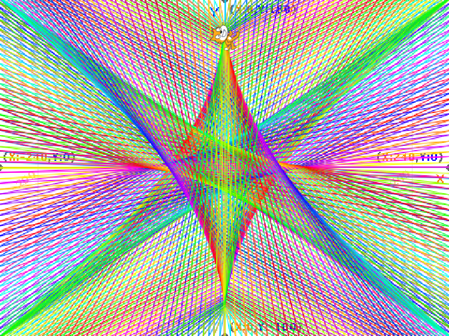
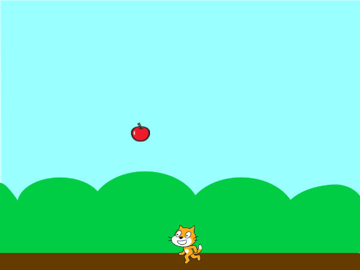

1週目のレポート ： 公大高専１年実習I-1
4b班42番 吉富晃一
第1週目
1-1 サイエンスアート

1.内容
スクラッチを使って線を書くプログラムを作った。ちょっとづつ角度を変えて線を書きまくることで円を作った。色は組み合わせるといずれ黒に収束するかとおもってずっと上書きし続けたけどいろが置き換わるだけで黒になることはなかった。。
2.感想
楽しかったのは楽しかった。けれども、僕はゲームを作る方が楽しかった。
1-2 ゲーム

1.内容
自分はキーボードのA/Dで左右に移動できるようにして、リンゴは操作キャラをある程度避けて落ちるように設定した。リンゴがよけるとき、横の端に触れると跳ね返るみたいな設定を作ったら、すごいあらぶってしまった。座標で設定していたのがダメだったのだと思う。結局あきらめた。
2.感想
結果的にはとても面白いものができたと思う。
1-3 ホームページ作成
私のホームページ
1.内容
僕が最近stormworksというゲームで作っている戦闘機について書いた。すでにあったプログラムの中から写真を貼る部分を探してきて、新しい写真を貼ることができた。折り返しとか設定する必要があると思っていたけれど、そんなことはなく自動的に文章は折り返してた。
2.感想
とても楽しかった。僕の母はHTMLで歯医者のホームページを作っていたので、こういうのをできるのはすごいなぁと思った。